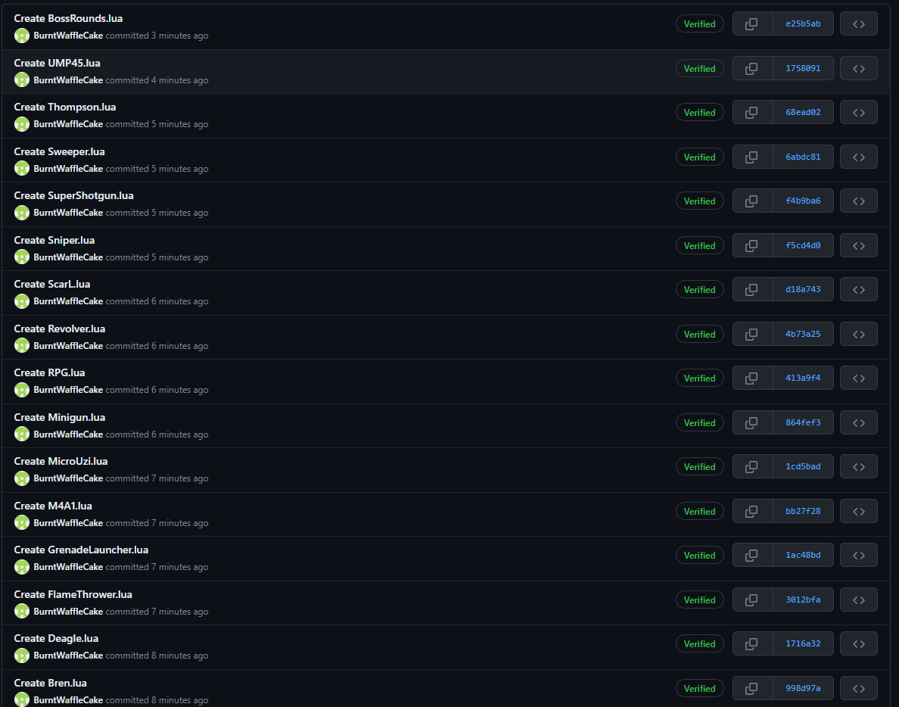

ISP Journal: Goose Simulator
1-May-2023
To Do: Personal Plans
AP Exams are prevalent and not much is left to do on the project. This week will mostly be final polishing and any last minute features we want to add. Entire team will work on final presentation which will include a general overview of what our team accomplished, failed to accomplish, and hope to change on the next project.
Issues
Significant Achievements
Final Overview
This project had several twists and turns where ideas were thrown about in a melting pot on a full blast. There were a lot of features that were originally planned that didn't make it into the final game or were outright blacklisted due to technical incapability or lack of good practices. The final outcome is very different from what we originally planned but our entire team is proud of what we were able to accomplish and have learned much along the way. Several external factors such as other classes and AP Exams on the final couple weeks of development have caused a lot of stress but those have passed now and we are proud to present the completed Goose Game.
24-Apr-2023
To Do: Personal Plans
Most of the enemies are now done and ready to be implemented into a round based system. The rounds will continue until all players are dead and are no longer able to continue fighting the enemies. There will be a heavy focus on adding new weapons and compiling the current bosses we have into round/wave oriented gameplay. We originally wanted to make the game into a dungeon crawler / rogue like esk game however several delays and time constraints have changed the overall product again. The final product will act more like a showcase of what our framework has and can achieve.
Issues
Significant Achievements
18-Apr-2023
To Do: Personal Plans
This week will there will be a heavy focus on completing the AI and logic for the enemies (bosses, minions, etc.) We are planning to complete at least 4 - 5 bosses by the end of this week with debugging and other problems solved/fixed. These bosses will be the main meat of our game and should be of satisfactory quality with little to no issues. Each boss will have their own set of unique attacks that the player will have to learn to beat said boss. Some bosses may have phases depending on the situation they are in. We will need to have as little unnecessary errors as possible to avoid potential points of failure.
Issues
Significant Achievements
BroodMotherBoss
BenHeadBoss
BroodMotherMinionSpitter
BroodMotherMinionBroodling
BroodMotherMinionSpider
03-Apr-2023
Technical challenges
A simpler and more efficient pathfinding algorithm was created but it lacks a good way to scale heights. The system uses an array of nodes to determine a direction with the least weight for the AI to travel in. The algorithm itself is very simple and includes various tests to ensure that the path is viable. Unfortunately, the algorithm lacks a good way to test for height changes such as through ramps or stairs and will tend to stay at the same elevation as it currently is. We have determined that this is a better compromise than using the older pathfinding system as it was much more performance intensive than our new algorithm.
Scheduling challenges
Meetings are still a problem as less and less time is available for our members to meet. Tests and other projects are still getting in the way of development and slowing progress down. Our goal is to get as many meetings together as we can with a focus on how our game will look and compromises due to time constraints.
Interpersonal challenges
We are severely lacking good ideas to incorporate into our game such as for weapons, map designs, and other design choices. The basic framework for our game is in place and ready to go but with no idea of what to create, progress has been hampered for a long time. A lot of our development focus has shifted from the workings of the game itself to what we need to include to create a cohesive game with a central theme in mind.
Significant Achievements
27-Mar-2023
Technical challenges
We have run into several issues with Roblox's pathfinding services and have decided to simplify our AI down and exclude the usage of the pathfinding service in our enemies. This has resulted in a need to create a watered-down version of a pathfinding AI and will be one of the major challenges our developers will have to overcome. We expect our version of pathfinding to be more performant than Roblox's and will allow us to increase the number of enemies in our game.
Scheduling challenges
Meetings are more available for our team but approaching due dates and test days have severely limited our capability to work on the ISP. A new scripter schedule has been put in place to make sure we can meet our project goals and finish our product in time for the deadline. This includes a revised timeline and a separation of goals into parts every week. This has been put in place to make sure everyone on our team is working and has something to do to ensure the timely execution of our plans.
Interpersonal challenges
One of our teammates has not been able to use computers for extended periods due to their parents. This has been an ongoing problem and a solution has not been available as it is a family issue. This has impacted our productivity to a certain extent, however, we feel that there are other methods for this individual to partake in the production of this project.
Significant Achievements
20-Mar-2023
Technical challenges
Our main Entity module has been completed to conform with the new OOP system we are using as well as combining the player and enemy logic. Debugging the code to make sure that no mistakes were made during the development has begun which will finish shortly. New AI needs to be written for our enemies which will slow down progress however we hope the new Entity system will make it much easier to implement new enemies.
Scheduling challenges
Our lead developer is back and has begun working on the project once more. More meetings are planned to be held as the major Cyber Security season is over. The due date is getting closer with slower progress than anticipated which has prompted our team to work harder to get the game done by the deadline.
Interpersonal challenges
Changes to the weapons in our game have begun to pop up as new features are being implemented and due to plans to shorten the final product to only include a portion of the original plan. This has resulted in some of our teammates disagreeing over how weapons should be balanced and which weapons to add. Some of our teammates also disagree on how over the top we want our game to be which has resulted in several ideas being scrapped or changed to fit the style of our game.
Significant Achievements
13-Mar-2023
Technical challenges
A large portion of the conversion to the new OOP has been completed. We are in the process of reworking our entity system to make it easier to use and to flesh out any major bugs regarding the logic behind the enemies. Combining the player and enemies into a unified entity system will allow us to easily make certain features compatible between the two systems. For example, our original code had two separate handlers for status effects for players and enemies. Our new code combines these two separate code sections into a unified class.
Scheduling challenges
The Cyber Security finals have arrived which has taken our lead developer away from working on the project. He has notified us that he will still be able to work on the project throughout his trip to Bethesda but we are anticipating a lack of progress due to his absence.
Interpersonal challenges
Our team is having to rethink many of the choices we made during the planning phase of the project. Although the ideas were good, we may have to scrap a significant portion of them due to production delays and overall overambition. We think that if we were given more time much more would be able to be accomplished but as of now, a large portion of our project will have to be put on hold for our team to focus on a smaller portion of our game rather than make the entire thing rushed.
Significant Achievements
6-Mar-2023
Technical challenges
A flaw in our current code has resulted in a complete scrap of many parts of our code. Lua allows programmers to use metatables to create sudo object-oriented coding. This means there are several different ways to approach using OOP. Unfortunately, the current way we are doing OOP is less efficient than the way we plan to change it in that our current way stores functions as part of the object whereas the new way uses metatable reference towards the object's methods which allows us to use less memory per object we create.
Scheduling challenges
A cybersecurity CTF known as PicoCTF has leeched some of our members from working full-time on our game. This has resulted in even less communication regarding the project along with even less productivity as attention is being drawn to the competition instead of the project. Our team is hoping attention will be diverted back to the project after the conclusion of the competition.
Interpersonal challenges
Our team has gone completely off of the original roles we assigned each other and are now working as a hodgepodge group with many not knowing what exactly they should work on. This has been amplified by the fact that many on our team still have not learned how to use the Roblox engine properly. This has become increasingly frustrating as this problem has persisted for multiple weeks at this point with little to no progress being made by these members.
27-Feb-2023
Technical challenges
The current way we are handling player and enemy models and logic are flawed in that they are independent systems from one another. This may work for games where the player and enemy systems are catered towards supporting their features; however, we want our players and entities to be synonymous with one another to allow easy application of features such as status effects, health handling, and others. This has resulted in a significant amount of code being rewritten to adorn the generalization of the players and enemies through a module that we are calling "entity".
Scheduling challenges
Our team is still having trouble making time for meetings and with English ISPs being due very soon even less time has been allocated toward the production of our game. Our small team of developers is working hard to make up for the lost time but progress is still slow with such a small team amplified by the fact that our developers are also having trouble making time for our game.
Interpersonal challenges
Many of our teammates are unable to use Roblox's coding platform due to their lack of knowledge of the software and systems. This has become a major problem as our team has been warned thoroughly about not being able to use the application to its fullest. This has resulted in an asymmetric amount of work being filtered toward our developers which have slowed progress and even put it to a standstill at times.
20-Feb-2023
Technical challenges
The current level creation workflow for our project is based on a directory search-based algorithm that has resulted in several problems when creating new areas for our map. The rooms themselves are not fit for optimal gameplay and can get laggy when many are loaded at once. The Roblox Engine itself is not known to handle thousands of instances being rendered at once very well so this performance issue is also another problem in need of fixing.
Scheduling challenges
Our team is having more and more trouble finding optimal dates to hold meetings which has resulted in less discussion regarding producing the actual game. Other issues regarding the availability and ability to learn the ways to create games on Roblox have resulted in slow progress with only one or two developers working on the project. Other projects have started to pop up in other classes which have also slowed the progress of development.
Interpersonal challenges
Motivation is still at a low with our team having to deal with other classes, tests, assignments, and such. Many of our teammates have not been available for meetings both in person and online and have been asked to indulge in other projects which have in turn hurt the productivity of our game. We are hoping that with the passing of many of the tests that have come our way, we will be able to continue work more efficiently.
13-Feb-2023
Technical challenges
One issue our team is running into is the referencing and usage of different values that pertain to the player's statistics. For example, the movement speed of the player is accessed through the player's character while the health is accessed from the server. This has resulted in problems when implementing features such as buffs which require open and easy access to these values. We are currently discussing implementing an all-encompassing library that will hold all values about the player. This would solve issues regarding unwieldy access to information about the player but may slow down the process as many of the aspects of our game will have to be modified to work with the new system.
Scheduling challenges
Scheduling meetings have remained an issue that has yet to be properly solved. The meetings that were originally planned for Saturday evenings have had little attendance and progress/planning accomplished during said meetings has been minimal to none. With the Cyber Security program now over for many of the teams that participated, we expect that meetings will become more frequent to ensure the success of our project.
Interpersonal challenges
With new topics and assignments directed toward our teammates that do not pertain to computer science or our ISP project, motivation generally decreased throughout our team. The momentum we had at the beginning of the project has slowly fizzled as other projects have plagued us that do not benefit the development of the game. This has significantly reduced the progress we are making in our project and may result in us having to reduce the amount of content we had initially wanted to make.
6-Feb-2023
Technical challenges
One issue our team is running into is the referencing and usage of different values that pertain to the player's statistics. For example, the movement speed of the player is accessed through the player's character while the health is accessed from the server. This has resulted in problems when implementing features such as buffs which require open and easy access to these values. We are currently discussing implementing an all-encompassing library that will hold all values about the player. This would solve issues regarding unwieldy access to information about the player but may slow down the process as many of the aspects of our game will have to be modified to work with the new system.
Scheduling challenges
Scheduling meetings have remained an issue that has yet to be properly solved. The meetings that were originally planned for Saturday evenings have had little attendance and progress/planning accomplished during said meetings has been minimal to none. With the Cyber Security program now over for many of the teams that participated, we expect that meetings will become more frequent to ensure the success of our project.
Interpersonal challenges
With new topics and assignments directed toward our teammates that do not pertain to computer science or our ISP project, motivation generally decreased throughout our team. The momentum we had at the beginning of the project has slowly fizzled as other projects have plagued us that do not benefit the development of the game. This has significantly reduced the progress we are making in our project and may result in us having to reduce the amount of content we had initially wanted to make.
30-Jan-2023
Technical challenges
The projectile system has now been fixed to use a system that integrates both the client and server. After receiving a projectile request from the client, the server will spawn its own projectile and then request a cosmetic projectile to be spawned in all clients. This ensures that collisions and hits are detected consistently while removing problems that had to do with where projectiles were spawning. We are now in the process of converting our old classes to work with the new system as well as making sure any other class that uses projectiles also works.
Scheduling challenges
A long bad weather weekend has forced us to cancel one of our in-person meetings. We have resorted to using discord to hold a meeting instead however I still feel that having in-person meetings will be much more productive than ones online.
Interpersonal challenges
One of our teammates has gone suspiciously quiet for a long time now. They are not known to reach out to us often but have not reached out to us at all for almost 2 and a half weeks now. We are currently trying to reach them again but with little success. Hopefully, we can get in contact with them again for the sake of our project as well as their well-being.
23-Jan-2023
Technical challenges
The projectile system that we are currently using requires an update due to several circumstances regarding hit detection. In the current system we use, the player equips a tool that in turn is used to spawn projectiles. The client sends a request to the server which then receives the request, processes the information, executes a sanity check on the information, then sends a request to all clients (including the original client) to spawn in a projectile. The main problem with this regards how to hit detection and the actual spawning of the projectile happens in the client. Although testing for hits in the client may seem like a better experience for the user, we plan to implement multiplayer into our game making testing for hits and collisions in the server much more consistent than in the client. Another problem that rises is that another request has to be sent to the server regarding when and where the hit happened. This could introduce an unwanted delay between the projectile request, spawning, and hit detection.
Scheduling challenges
Due to many of our teammates working or being occupied during the weekends and weekdays, many of our meetings had to be shortened or omitted due to insufficient attendance. This has become a serious problem and could result in a reduction of motivation for the project. We are currently working together to solve this problem; however, it seems that this and the following week will also be following the trend mentioned above.
Interpersonal challenges
Although we have tried to standardize the platform we use to communicate, it is becoming more difficult to reach out to some of our team members. They are stating that their parents either do not allow them to use the form of communication at all or in very short intervals which have made contacting them regarding aspects of our project difficult. We are currently trying to get them to talk to their parents regarding their situation as this lack of communication could result in the inability for them to receive important announcements.
16-Jan-2023
Technical challenges
The room generation algorithm has been completed and is flexible enough to permit different types of generation for different stages/levels. Our team is not working on creating rooms to be used in this algorithm and has been attempting to keep all of our assets as light as possible (performance). A rarity system is planned to be implemented for our items which will be picked up from chests that are randomly generated throughout the level. A new class that assists with random generation logic will be created that will help us with other aspects of our game other than the rarity of items.
Scheduling challenges
This week presents us with less than ample time to work on our ISP together. The Cyber Patriot competition takes place the day before our official meeting and has resulted in a notable portion of our time allocated to cybersecurity efforts. Some of the work originally intended for this week may have to be pushed to next week. We plan to put together a very basic beta of our game which will include the map generation, basic enemies and weapons, and a boss. We plan to get this created by around mid-February.
Interpersonal challenges
Due to numerous external conflicts with meeting dates along with other events, not a lot of communication has happed between our teammates this week. We plan to regroup on Sunday to get back on track and discuss further developments in our game. Most of the framework is in place and what remains is implementing assets and further polishing the performance and look of our game, a topic to be discussed in this week's meeting.
9-Jan-2023
Technical challenges
Some of our teammates are unable to bring devices capable of running Roblox Studio to school due to restrictions placed by their parents or the school entity. This has limited our ability to work while in leisure time (privilege periods) and may negatively impact our work schedule as school is a guaranteed source of in-person meetings. We are currently working towards making sure everyone can access our main project file whether that be in school or at home. Physical copies of our game have also been added to multiple devices as well as to the main GitHub repository to ensure backups are present in case of file corruption or memory loss.
Scheduling challenges
Meeting dates have been set to Sunday evenings and unofficial Wednesday meetings are also being held. These meetings are used to log planning and development progress in the game and can be used to change aspects of our game and serve as a semi-guaranteed method of reaching out to all members through voice chat and/or physical meetings. A problem that has arisen is the consistency of times available on Sundays. Some of our teammates have work and/or are unavailable during varying times due to religious meets as well as other external factors. This has caused the meetings to have a variable time and may result in problems in the future. Other possible days are currently being discussed.
Interpersonal challenges
We are currently lacking good ideas as to how our game will look and work. Our game needs multiple enemy and weapon types and a layout as to how these weapons will function, interact with other components of our game, and be created through the Roblox engine are essential to ensure smooth development. Although many ideas are being thrown around our team in both official and unofficial meetings, many have turned out to be unrealistic, impractical, and outright senseless. Those deemed to have some semblance of sense have been shallow in terms of details as to their functionality and mechanics. This has caused development to bottleneck and could turn out to extend the estimated time before we can put together a functional game.
2-Jan-2023
Technical challenges
The usage of the Roblox engine has provided our team with a multitude of technical challenges. Roblox was built around the Lua programming language which is less performant than languages such as C++ or Java. Although the Roblox engine was created to be run on a multitude of devices including lower-end computers and phones, this limitation presented by the coding language makes advanced and/or bulk computation close to impossible to do efficiently in real-time. Another problem presented by the usage of the Roblox engine is the lack of features present in other game engines. One major example of this is mesh manipulation where meshes can be generated through the usage of scripts or modified to meet the programmer's needs. This results in us having to use workarounds or completely void ideas due to the limitations of the engine.
Scheduling challenges
Because our entire school career is not just based on computer science, many of our teammates have other work to do for other classes. Some of our teammates have jobs and other extracurricular activities that have hindered our ability to meet together and discuss the ISP project. To alleviate this issue, we are planning to create a discord server where we can have immediate contact with one another as well as plan sessions and optimize overall workflow.
Interpersonal challenges
One of our teammates has refused to get into contact with the rest of the team which has resulted in a confused ordeal regarding the disposition, sanity, and presence of said teammate. Multiple emails from multiple people on our team were sent to the person with no replies or any measure taken for contact. We are currently attempting to find other methods of contacting the said teammate to verify their presence and their willingness to participate in the ISP project as well as integrate them into our current and future plans.
Roles
Software Development Engineer
Software Development Engineers are people who program and design software that meets the needs of their targeted audience. They are the foundational builders of a product and are responsible for the creation, deployment, and maintenance of a product. The most prevalent role in the creation of Goose Simulator will be the Software Developer/Engineer as many people are needed to program a fully-fledged game. Because many of our teammates are less acquainted with the programing language Lua that the Roblox engine uses, there may be a significant lack of efficiency when it comes to programming the game. To alleviate this problem, a very concrete planning stage will have to take place to prioritize the most important components needed in the game while allowing the other teammates to catch up. This role is best suited for me in the current situation of our Isp group as I am the most familiar with Lua at this point. My current goal is to develop and needed modules for our game so that our creation process after the planning is complete will be as smooth and simple as possible for our other teammates.
QA Engineer
QA (Quality Assurance) Engineers are people who review the product to identify and document issues through a series of coordinated tests on the product. As their name suggests, QA Engineers are essential in assuring the quality of the product they are working on and can be a buffer to catch both basic and major issues presented by the product. All of our teammates will have to act as QA Engineers eventually as our project comes to an end. The more people there are to catch bugs, errors, and issues with the game, and the faster these problems are caught, the more we will be able to fix them before our deadline approaches us. My main goal will be to review parts of the code to find bad coding practices along with ways to simplify or improve the efficiency of parts of our game. This will improve the overall performance of our game allowing for further reach to people with lower-end devices along with alleviating some of the shortcomings of the Lua programming language.
Project Manager
Project Managers are the people in charge of the entire product manufacturing, planning, and launching process. They are involved with almost all the parts of finishing and releasing a product and are a very important role that can define whether a product will fail or succeed. Although having a key figure in a products designing proccess is critical to its success, the fundamental structure of our team, and the way it formed, prevents a singular leader who determines the course of the entire project.
Product Manager
Product Managers are people who identify the needs of the target audience and create the main goals of the product. They are the ones responsible for creating the roadmap and defining the features that should be present in the product to gain the maximum amount of profit from the target audience. Due to the somewhat small size of our team (5 people), many (if not most) of our teammates will already be part of the planning process to create a product that we are satisfied with. The creation of goals for our project is essential in the process of making our game to prevent hiccups and creative deadends that may arise in our development process.
Release Engineer
Release Engineers are responsible for managing and overseeing the data and data transfer of files and other resources that are part of the product's design. These can include online repositories of code as well as other source code from programs and software that the company needs. To maintain the legitimacy of our code and game, we will need to keep a multitude of backups and keep our code as secure as possible along with making sure to take into place the usage of insecure and inappropriate clients. Roblox already keeps a cloud network that stores games and can be used to access information about the players that will interact with our product. However, we will also keep weekly physical file copies of our game on multiple devices to prepare for an event where our main file is lost.